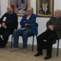

La ce vă gândiţi când auziţi cuvântul cultură? Probabil la biblioteci prăfoase, muzee austere şi muzică de înmormântare. Sau vă amintiţi lansările de carte în timpul cărora autorul citeşte pasaje doar de el înţelese, criticii de casă înşiră citate ca să arate cât sunt ei de erudiţi, iar invitaţii îşi îndeasă prin buzunare fursecuri şi pateuri, vânând din priviri volumele împărţite gratuit.
Ostentaţie scorţoasă şi ermetism voit
În mintea majorităţii intelectualilor români, cultura e musai solemnă, elitistă şi de nepătruns. Ea nu tolerează umorul, exprimările simple şi prezentările comerciale. “Slujitorii” ei adoră neologismele formate din cât mai multe litere, sunt în stare să vorbească ore în şir fără să spună mai nimic şi detestă averile materiale. Modeşti nevoie mare, declară în talk-show-uri şi conferinţe că nu au nevoie decât de o hârtie, un creion şi un creier pentru a-şi îndeplini menirea. Curios lucru, discursul li se schimbă în perioada alocărilor de bugete.
{kind=link}
Când mai dai peste câte o “emisiune serioasă” ai senzaţia stânjenitoare că pătrunzi din greşeală în sufrageria cuiva şi întrerupi o conversaţie intimă între vechi prieteni. Moderatorul şi invitaţii săi pomenesc nume cărora doar ei le pot asocia şi câte un chip, fac aluzii fine la poeţi obscuri, autori de nişă şi regizori anonimi, râd la glumele pe care doar ei le pricep. Din când în când, realizatorul îşi mai aminteşte ca din întâmplare că este filmat şi atunci întrerupe dialogul cu un condescendent “să le explicăm şi telespectatorilor noştri la ce ne referim”, de parcă publicul n-ar fi destinatarul de drept al mesajului emisiunii, ci doar un indiscret trăgător cu urechea. Iată un fragment dintr-o emisiune culturală clasică:
{kind=link}
În condiţiile astea, n-ar trebui să ne mirăm că “omul de rând” răspunde cu “nu ştiu io d’astea” de fiecare dată când este întrebat despre ce-a mai citit, că pune piciorul într-o expoziţie doar în Noaptea Muzeelor întrucât intrarea e liberă şi că îşi scoate pălăria când aude un fragment din Bach, crezând că trece cortegiul funerar.
Cultura, povară constipată sau bucurie simplă?
Poate că lumea ar fi mai relaxată şi mai dornică să “se culturalizeze”, dacă ar şti că, la început, spectacolele de operă au fost un fel de telenovele ale epocii lor, că picturile murale sunt un soi de strămoşi ai tapetului sau că Rebreanu, Preda şi Sadoveanu au vrut doar să scrie nişte poveşti frumoase, nu să lase urmaşilor subiecte pentru tezele la română.
Formatorii de opinie, începând cu profesorii din şcoala primară, continuând cu jurnaliştii de profil şi terminând cu oficialii Ministerului Culturii şi Patrimoniului Naţional, ar putea îndrăzni să prezinte şi altfel ideea de cultură. Ar fi un progres necesar şi s-ar putea ca “popularizarea” culturii să nu mai pară o misiune imposibilă.
Abia când reuşim să ne bucurăm de artă şi nu să ne prosternăm în faţa ei, atunci suntem culţi cu adevărat.
In liceu am dat o lucrare din “Ion” , si sub 2-ul primit am citit reactia profesoarei : “Cine te crezi, sa colaborezi cu Calinescu si Lovinescu la comentarea romanului???” De atunci, am invatat sa nu mai am pareri personale referitoare la nimic din ceea ce se studia la scoala … si copiii nostri invata acelasi lucru …
Asta chiar e trist. Si se vede mai tarziu cand copiii devin adulti si au decizii de luat: sa aleaga o profesie, sa voteze, sa faca o afacere.
Dar asa a fost mereu “criptic” Iosif Sava , greu de urmarit si pentru greutatea cu care vorbea. Si da, discutia era intr-adevar prea savanta pentru o emisiune de TV; as zice ca televiziunea presupune subiecte mai usurele, capabile de a fi digerate “on the fly”..pentru restul citim cartea
Ideile insele nu-s suficient de coerente; daca si-ar fi scris ideile si le-ar fi citit, sunt sigur ca era poate mai usor de urmarit. (Ex. vezi carti pe suport digital /audio in lectura autorului)
Comments on this entry are closed.